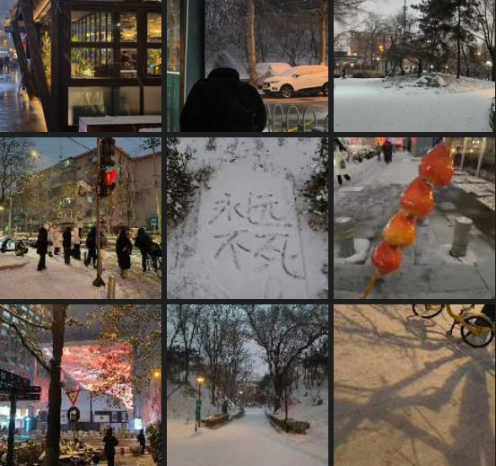

思感集 / 心理学习 / 艺术治疗 / 社会观察 / 关系经验
持续记录真实感受、身体反应、社会议题和内容灵感。
Editorial Portfolio Archive
朝夏｜AI 内容运营与生成内容策划作品集
从长期观察、心理学习与 AI 工具实践出发，将复杂议题转化为可阅读、可发布、可传播、可停留的内容。我将个人经验、心理感受、品牌理解与 AI 工具使用结合，转译为三类内容生产能力：品牌内容包装、原创叙事系统与 AI 产品设计。
网易传媒 AI 向内容运营实习需要的不是单点技能，而是围绕 AI 行业选题、图文内容、工具使用、文案优化和持续复盘的完整链路。
AI 提高效率，但运营决定方向。我关心的是如何让选题更准确、观点更清楚、表达更适合平台，也更值得被读完。
在 AI 和算法都偏向简短、直接、碎片化表达的时代，我更重视完整、成体系、能让人停留的文字。
内容不只是信息传递，也可以是一段陪伴、一场对话、一种向世界坦诚的方式。这个判断贯穿思感集、AI 内容样稿、AI 生成内容专题、展览体验和观察档案。
这个作品集不是把多个作品简单摆在一起，而是展示一条从长期输入、内容判断、AI 辅助生产到项目输出的能力链路。
持续记录真实感受、身体反应、社会议题和内容灵感。
把私人观察转化为可以被讨论、被发布、被延展的公共议题。
用 AI 辅助结构整理、语言迭代、影像生成、产品形态推演和代码实现。
形成可阅读、可传播、可展示、可产品化的内容结果。
对应 AI 向内容运营实习的日常工作：找选题、做内容、包装发布、看反馈。
《思感集》是我长期记录心理感受、关系经验、社会观察、身体反应和内容灵感的思考系统。它不是一个孤立的写作项目，而是整个作品集的底层材料库：为 AI 行业选题提供观点来源，为《坠落静默》提供心理叙事基础，也为 IMXS、被单人和展览项目提供情绪与议题判断。
从 AI、心理、关系、艺术和社会事件中提炼可被平台阅读的观点。
为《坠落静默》提供压抑、边界、崩塌、接纳和连接等核心议题。
长期训练语言节奏、情绪控制、标题意识和内容复盘能力。
首页只保留最关键的阅读路径。每个入口都可以继续进入详情页，查看证据链、过程、方法、产出和复盘。
MAIN CASE / WRITING SYSTEM
证明持续观察、选题策划、长文表达、公开发布和数据复盘能力，也解释整个作品集的底层材料来源。

查看长期输出系统 → 02MAIN CASE / AI TOPIC PLANNING
围绕 AI 产品评测、Agent 趋势、AI 辅助写作流程，展示面向社交平台的图文策划能力。
 查看 AI 内容选题 →
03
查看 AI 内容选题 →
03
MAIN CASE / AIGC WORKFLOW
以 IMXS、《坠落静默》和被单人为三个子案例，展示 AI 生成内容在品牌传播、原创叙事和产品设计中的不同生产路径。
 查看 AI 生成内容专题 →
04
查看 AI 生成内容专题 →
04
SUPPORT CASE / CONTENT IN SPACE
把内容从文字和屏幕延伸到真实空间、活动流程、用户参与和现场执行。
 查看内容现场 →
05
查看内容现场 →
05
MATERIAL ARCHIVE / FIELD NOTE
解释选题从哪里来：朋友圈观察、用户体验现场、城市经验、心理/艺术资料库和 AI 工具资料库。
 查看资料来源 →
查看资料来源 →
项目重新归类后，网站重点从“视觉作品很多”转向“我能如何参与 AI 内容账号的日常生产”。
低饱和视觉、图文版式、封面判断、系列风格统一。
从社会议题、AI 工具变化和平台语境中提炼栏目方向。
用 LLM 辅助结构、润色和标题，用 AI 图像/视频辅助视觉生产。
选题、资料、脚本、生成、人工复核、发布包装、复盘。
关注 AI 行业动态、产品变化、平台图文表达和社交传播。
用阅读量、阅读时长、完读率和新增关注判断内容有效性。
RESUME / SHORTCUT
本网站由本人独立策划与产出，过程中使用 ChatGPT、Codex 等 AI 模型辅助结构整理、文案迭代与代码实现；最终判断、内容取舍与表达均由本人完成。